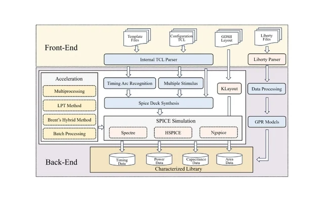
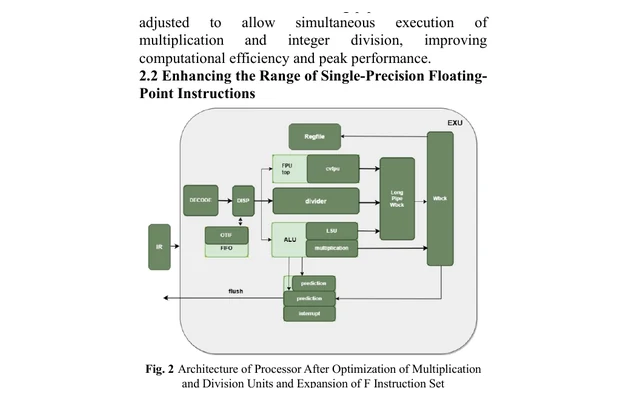
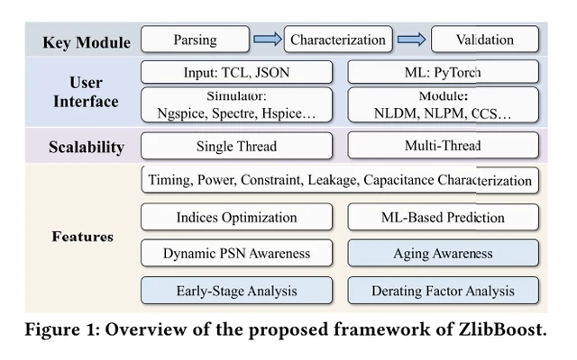
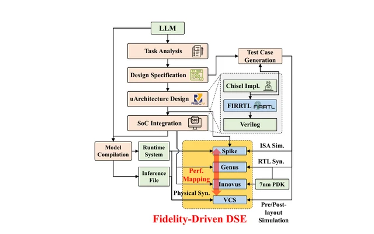
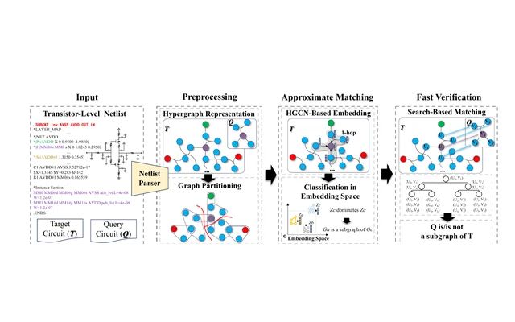

Zhejiang University
AI for EDA and efficient hardware systems
Academic profile
I am a researcher working at the intersection of artificial intelligence and electronic design automation. My research focuses on AI for EDA and low-power optimization, with an emphasis on design methodologies and energy-efficient techniques for chip and hardware design.
I have published peer-reviewed work in leading conferences and journals, including ICCAD, ASP-DAC, MLCAD, ACM TODAES, and IEICE Electronics Express. Our work on agile LLM accelerator development received the ICCAD 2024 Best Paper Award in the Front-End category.
AI for EDA and efficient hardware systems
Integrated Circuit Design and Integrated Systems
ZlibBoost appears in ACM TODAES.
Our RISC-V audio processor work appears in IEICE Electronics Express.
Invited work on machine-learning-assisted cell characterization appears at ASP-DAC.
Our agile LLM accelerator paper receives the ICCAD Best Paper Award.
Subcircuit identification work appears at MLCAD.
Machine learning for cell characterization.
Energy-aware methods that preserve the timing, quality, and reliability constraints of real systems.
Agile accelerator and processor design for language models and real-time signal processing.
Reverse chronological
Showing 5 publications

ACM Transactions on Design Automation of Electronic Systems, 31(4), Article 74

IEICE Electronics Express, 23(2)

30th Asia and South Pacific Design Automation Conference, pp. 385-391


ACM/IEEE 6th Symposium on Machine Learning for CAD